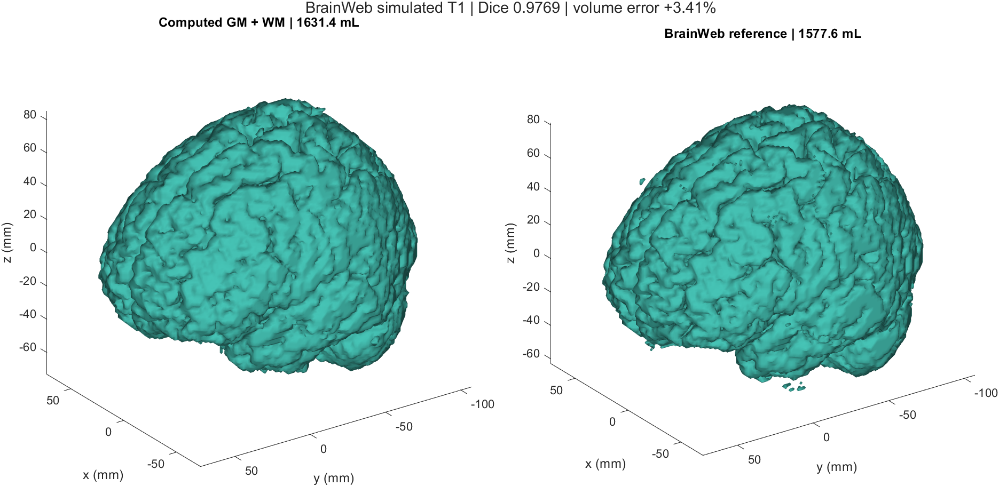
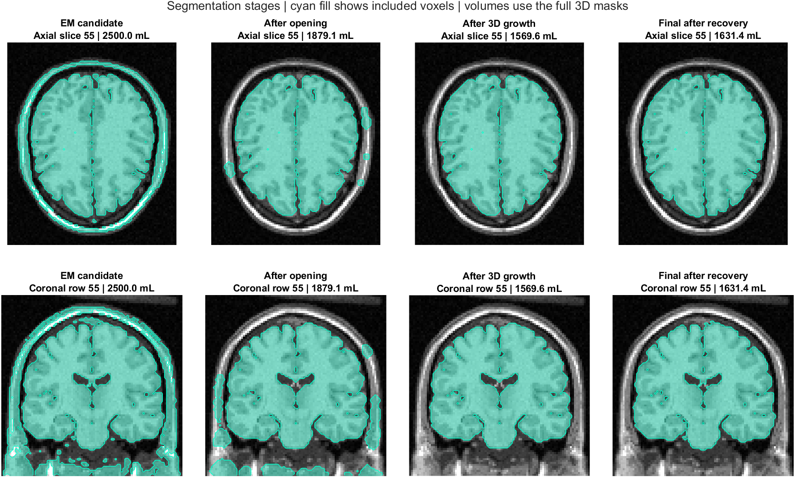

BrainWeb human MRI · MATLAB demonstration
Human Brain MRI Segmentation with MATLAB
Tsung-Yeh Hsieh · Source code · Download MATLAB project
Select a small seed region inside the brain, grow a three-dimensional segmentation, and inspect the measured volume and agreement with BrainWeb reference tissues.
This is a semi-automatic segmentation workflow. You specify the seed region; the supplied Gaussian-mixture model, morphological processing, and region-growing code determine the final mask. All implementations are included.
MRI → Gaussian smoothing → EM intensity groups → candidate mask → opening → seeds → 3D region growing → boundary recovery → volume and evaluation
Run the demo
Use MATLAB Desktop with Image Processing Toolbox. Set Current Folder to this project's root. Start with:
brainweb_demo('check')
brainweb_demo('fixed')
brainweb_demo('manual')
| Mode | What happens |
|---|
check | Twelve small known-answer checks cover EM, six-neighbor region growing, physical volume, and seed handling. No drawing is needed. |
fixed | Use the existing fixed seed disk and parameters to reproduce the saved baseline. Save the segmentation, measurements, surface, and figures. |
manual | Browse MRI slices, draw a small seed polygon, and run the same segmentation pipeline with your seeds. |
Results figures are saved in the background. Manual mode opens the seed-selection window. Each full run has its own folder under Results/Fixed or Results/Manual; the command prints the output path.
Choose your seeds
- Run
brainweb_demo('manual'). Wait while the program prepares the EM candidate and opening masks.
- Browse with the slice slider, slice-number box, or scroll wheel. Select a slice with visible brain tissue.
- Click Draw seed polygon, draw a small region inside the brain, and double-click to finish. You do not need to trace the whole brain.
- Inspect the colors: yellow marks your region, blue outlines the eligible opening mask, and green shows valid seeds. Seeds are the intersection of your region with that mask on this slice only.
- Click Use these seeds. If no valid seeds remain, choose another region or slice. Cancel ends the run.
Your first manual run starts with no saved annotation. After you accept a region, it is stored under Initialization/Manual. A later manual run previews that region; accept it again or draw a replacement. This package does not preload a previous user's clicks.
A seed selects eligible connected tissue. A larger drawn region does not directly imply a larger final brain mask, and two different regions in the same connected component can produce the same result.
Example result
The fixed example contains 203,919 voxels on a 2 × 2 × 2 mm grid. Its selected volume is 1,631,352 mm³ (1,631.352 mL), with Dice 0.976945 against BrainWeb gray-plus-white-matter labels. These are results for this simulated case, not target values for arbitrary MRIs.

Fixed-mode output alongside BrainWeb gray and white matter. Reference labels are loaded after segmentation and are used only for evaluation.

How the selected region changes through the supplied processing stages.
Algorithms
Gaussian mixture and EM. A five-component Gaussian mixture describes normalized MRI intensity groups. Expectation–Maximization fits their means, variances, and weights. The existing example uses components 3 and 4 as the candidate foreground, with the original probability threshold.
Morphology and connectivity. Opening breaks thin connections before six-face-neighbor region growing selects the seed-connected component. Dilation, restricted to the original candidate mask, recovers boundary tissue; a final growth pass retains seed-connected voxels.
Volume. Multiply the selected voxel count by the product of the three voxel spacings. The surface mesh is a visualization of the mask; it is not used to calculate the voxel-based volume.
Evaluation. Dice is twice the overlapping voxel count divided by the sum of the computed and reference voxel counts. The reference combines gray and white matter; cerebrospinal fluid is outside this target. Precision, recall, and volume are also saved.
Fixed and manual modes share the same algorithm and parameters. Only the seed source differs. Settings are collected in demoOptions.m.
Files and outputs
| Path | Purpose |
|---|
brainweb_demo.m | Main entry point and command-line instructions. |
fitGMM_EM.m, growRegion3D.m, maskVolume.m | Complete algorithm implementations. |
private/ | Seed browser, preprocessing, shared pipeline, evaluation, and plotting. |
Data/brainweb_t1.mat | Input simulated human T1 MRI and grid metadata. |
Reference/tissue_labels.mat | BrainWeb labels for evaluation after segmentation. |
Baseline/ | Saved fixed-mode results and measured reproducibility limits. |
Example/ | Newly reproduced fixed-mode images and numerical summaries. |
Results/.../segmentation.mat | Masks, seeds, fitted model, parameters, volume, and evaluation. |
summary.csv, baseline_comparison.csv | Stage measurements and comparison with the saved fixed example. |
brain_surface.stl | Computed surface for viewing in mesh software. |
seed_selection.png, stage_comparison.png, brain_3d.png, slice_comparison.png, all_slices.png, em_diagnostics.png | Seed preview, stages, 3D comparison, slice errors, full-volume review, and EM diagnostics. |
Data source
The input is the BrainWeb normal simulated human brain: T1, 1 mm source sampling, 3% noise, and 0% intensity non-uniformity. This example samples every second voxel along each axis, retaining the full field of view on a 2 mm grid. Arrays use [row_y, column_x, slice_z] order, with dimensions 109 × 91 × 91. Reference labels were sampled at the same locations.
BrainWeb requests acknowledgment of its resource and associated publications. In particular: Cocosco et al., BrainWeb: Online Interface to a 3D MRI Simulated Brain Database, NeuroImage 5(4), S425, 1997; and Collins et al., Design and Construction of a Realistic Digital Brain Phantom, IEEE Transactions on Medical Imaging 17(3), 463–468, 1998. See the source website for the full references and current data information. This local package does not assign a new license to BrainWeb data.
Validation and scope
Run test_pipeline to execute the twelve algorithm checks, reproduce the fixed baseline, and test two programmatically specified seed regions. Those polygons exercise seed intersection and the shared pipeline; they are not recorded mouse drawings. The manual browser is retained from the previously working BrainWeb version.
The original fixed-mode repetitions were voxel-identical. Comparison allows one voxel (8 mm³) and a Dice difference of 3 × 10⁻⁶ for small numerical differences. This tolerance measures reproducibility of this example, not segmentation accuracy across scanners or operating systems.
This is a development demonstration on one simulated case. Parameters were selected while inspecting its reference results. Some non-brain tissue and errors near fluid boundaries remain. The standalone edition is tested with MATLAB R2024b on Windows; a new hands-on mouse-drawing session and macOS execution have not been retested.